Code
library(dplyr)
library(tidyr)
library(jsonlite)
library(stringr)
library(purrr)
library(janitor)
library(ggstatsplot)
library(WRS2)
library(BayesFactor)This section presents a statistical validation of potential sentiment bias by COOTEFOO board members across key topics and datasets. Using three statistical tests — parametric (ANOVA), non-parametric (Kruskal-Wallis), and robust (Yuen’s trimmed mean) — the analysis investigates whether sentiment scores differ significantly between Fishing and Tourism topics, across datasets and individual board members.
👉 For the full set of four test types, including ANOVA (parametric), Kruskal-Wallis (non-parametric), robust, and Bayesian methods, please explore the interactive Shiny Dashboard accompanying this project.
The following packages are used to support data wrangling, statistical comparison, and JSON knowledge graph processing:
dplyr, tidyr: Core tidyverse tools for data manipulation and reshapingjsonlite, purrr, stringr: Handle and parse structured JSON knowledge graph datajanitor: Clean column names and tidy messy dataggstatsplot: Statistical comparison plots with effect size and test outputsWRS2: Robust ANOVA and non-parametric test functionsBayesFactor: Perform Bayesian hypothesis testing for CDAlibrary(dplyr)
library(tidyr)
library(jsonlite)
library(stringr)
library(purrr)
library(janitor)
library(ggstatsplot)
library(WRS2)
library(BayesFactor)This section establishes the classification of topics into two key industries — Fishing and Tourism — based on recurring topic labels across the datasets. It also defines the six key COOTEFOO board members for targeted sentiment analysis.
fishing_labels <- c("deep_fishing_dock", "new_crane_lomark", "fish_vacuum",
"low_volume_crane", "affordable_housing", "name_inspection_office")
tourism_labels <- c("expanding_tourist_wharf", "statue_john_smoth", "renaming_park_himark",
"name_harbor_area", "marine_life_deck", "seafood_festival",
"heritage_walking_tour", "waterfront_market", "concert")
cootef_members <- c("Seal", "Simone Kat", "Carol Limpet", "Teddy Goldstein", "Ed Helpsford", "Tante Titan")The following function loads and parses each dataset’s participant links and sentiment values, merges them with corresponding topic labels, and constructs a clean dataframe containing the board member, industry, and sentiment score for each interaction.
load_participants <- function(path) {
tryCatch({
if (!file.exists(path)) return(tibble(Member=character(), Industry=character(), Sentiment=numeric()))
raw <- read_json(path, simplifyVector = FALSE)
humans <- raw$nodes %>%
keep(~ !is.null(.x$type) && .x$type %in% c("entity.person","person","member")) %>%
map_chr("id")
plan_topics <- raw$links %>%
keep(~ !is.null(.x$role) && .x$role == "plan") %>%
map_dfr(~ tibble(plan = .x$source, topic = .x$target))
raw$links %>%
keep(~ !is.null(.x$role) && .x$role == "participant" &&
!is.null(.x$target) && .x$target %in% humans &&
!is.null(.x$sentiment)) %>%
map_dfr(~ tibble(
plan = .x$source,
Member = .x$target,
Sentiment = as.numeric(.x$sentiment)
)) %>%
left_join(plan_topics, by = "plan") %>%
mutate(
Industry = case_when(
topic %in% fishing_labels ~ "Fishing",
topic %in% tourism_labels ~ "Tourism",
TRUE ~ NA_character_
)
) %>%
filter(!is.na(Industry)) %>%
select(Member, Industry, Sentiment)
}, error = function(e) {
tibble(Member=character(), Industry=character(), Sentiment=numeric())
})
}
# Use relative paths to ensure Quarto compatibility
datasets_raw <- list(
TROUT = load_participants("data/TROUT.json"),
FILAH = load_participants("data/FILAH.json"),
JOURNALIST = load_participants("data/journalist.json")
)This section presents statistical comparisons of sentiment toward Fishing and Tourism topics using different test types. Each test evaluates whether the sentiment scores differ significantly between the two industries within each dataset. The first subsection (4.1) uses Parametric ANOVA, followed by a second subsection (4.2) using the Non-Parametric Kruskal-Wallis test.
The parametric test (ANOVA) assumes normally distributed sentiment scores and compares means across groups. This method is useful for detecting whether Tourism and Fishing topics were rated differently in each dataset.
df_trout <- datasets_raw$TROUT %>% filter(!is.na(Sentiment), !is.na(Industry))
if (nrow(df_trout) > 1 && all(is.finite(df_trout$Sentiment))) {
ggbetweenstats(df_trout, x = Industry, y = Sentiment, type = "parametric")
} else {
print("Not enough valid sentiment data in TROUT dataset.")
}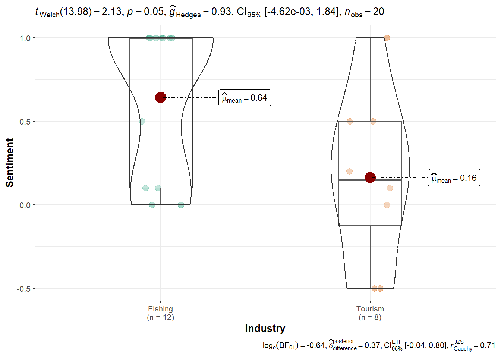
if (nrow(df_trout) > 1) {
summary(aov(Sentiment ~ Industry, data = df_trout))
} else {
print("Not enough data to run ANOVA on TROUT.")
} Df Sum Sq Mean Sq F value Pr(>F)
Industry 1 1.102 1.1021 4.76 0.0426 *
Residuals 18 4.168 0.2316
---
Signif. codes: 0 '***' 0.001 '**' 0.01 '*' 0.05 '.' 0.1 ' ' 1df_filah <- datasets_raw$FILAH %>% filter(!is.na(Sentiment), !is.na(Industry))
if (nrow(df_filah) > 1 && all(is.finite(df_filah$Sentiment))) {
ggbetweenstats(df_filah, x = Industry, y = Sentiment, type = "parametric")
} else {
print("Not enough valid sentiment data in FILAH dataset.")
}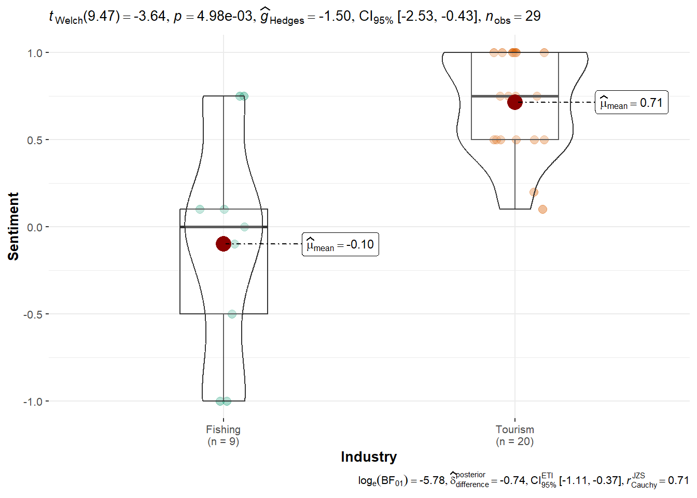
if (nrow(df_filah) > 1) {
summary(aov(Sentiment ~ Industry, data = df_filah))
} else {
print("Not enough data to run ANOVA on FILAH.")
} Df Sum Sq Mean Sq F value Pr(>F)
Industry 1 4.123 4.123 22.76 5.64e-05 ***
Residuals 27 4.891 0.181
---
Signif. codes: 0 '***' 0.001 '**' 0.01 '*' 0.05 '.' 0.1 ' ' 1df_journalist <- datasets_raw$JOURNALIST %>% filter(!is.na(Sentiment), !is.na(Industry))
if (nrow(df_journalist) > 1 && all(is.finite(df_journalist$Sentiment))) {
ggbetweenstats(df_journalist, x = Industry, y = Sentiment, type = "parametric")
} else {
print("Not enough valid sentiment data in JOURNALIST dataset.")
}if (nrow(df_journalist) > 1) {
summary(aov(Sentiment ~ Industry, data = df_journalist))
} else {
print("Not enough data to run ANOVA on JOURNALIST.")
} Df Sum Sq Mean Sq F value Pr(>F)
Industry 1 0.761 0.7612 3.155 0.0802 .
Residuals 68 16.407 0.2413
---
Signif. codes: 0 '***' 0.001 '**' 0.01 '*' 0.05 '.' 0.1 ' ' 1TROUT Dataset: Fishing topics had a higher average sentiment (0.64 vs. 0.16), with the ANOVA test yielding p = 0.0426. While statistically significant, the result offers only moderate evidence and does not strongly support TROUT’s claim of anti-Tourism bias.
FILAH Dataset: Tourism topics were rated significantly higher (mean = 0.71) than Fishing (mean = -0.10), with a highly significant result (p < 0.001). This provides strong evidence in favor of FILAH’s claim that COOTEFOO members are biased toward Tourism.
JOURNALIST Dataset: A similar trend appears (Tourism = 0.68 vs. Fishing = 0.46), but the result was not statistically significant (p = 0.0802). This suggests a weaker, observational pattern rather than conclusive evidence from this external dataset.
This section repeats the same industry-based sentiment comparison using the Kruskal-Wallis test, a non-parametric method that does not assume normality. It is suitable for ordinal or skewed sentiment distributions.
if (nrow(df_trout) > 1 && all(is.finite(df_trout$Sentiment))) {
ggbetweenstats(df_trout, x = Industry, y = Sentiment, type = "nonparametric")
} else {
print("Not enough valid sentiment data in TROUT dataset.")
}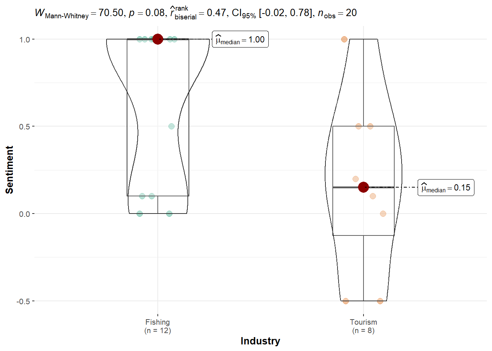
if (nrow(df_trout) > 1) {
kruskal.test(Sentiment ~ Industry, data = df_trout)
} else {
print("Not enough data to run Kruskal-Wallis on TROUT.")
}
Kruskal-Wallis rank sum test
data: Sentiment by Industry
Kruskal-Wallis chi-squared = 3.2505, df = 1, p-value = 0.0714if (nrow(df_filah) > 1 && all(is.finite(df_filah$Sentiment))) {
ggbetweenstats(df_filah, x = Industry, y = Sentiment, type = "nonparametric")
} else {
print("Not enough valid sentiment data in FILAH dataset.")
}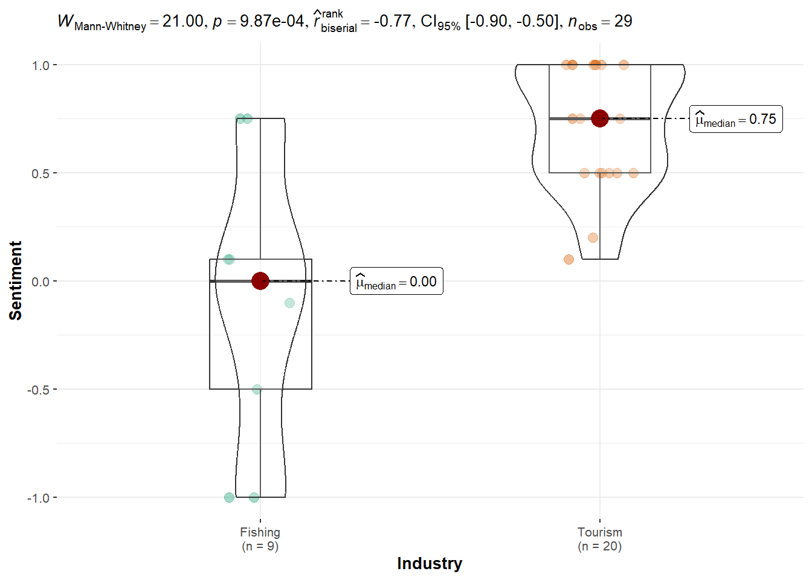
if (nrow(df_filah) > 1) {
kruskal.test(Sentiment ~ Industry, data = df_filah)
} else {
print("Not enough data to run Kruskal-Wallis on FILAH.")
}
Kruskal-Wallis rank sum test
data: Sentiment by Industry
Kruskal-Wallis chi-squared = 11.011, df = 1, p-value = 0.0009056if (nrow(df_journalist) > 1 && all(is.finite(df_journalist$Sentiment))) {
ggbetweenstats(df_journalist, x = Industry, y = Sentiment, type = "nonparametric")
} else {
print("Not enough valid sentiment data in JOURNALIST dataset.")
}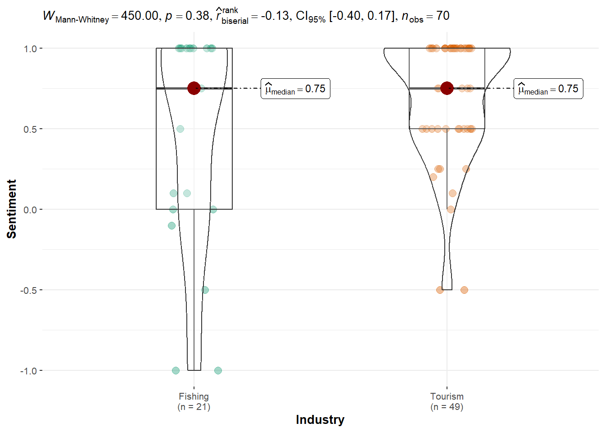
if (nrow(df_journalist) > 1) {
kruskal.test(Sentiment ~ Industry, data = df_journalist)
} else {
print("Not enough data to run Kruskal-Wallis on JOURNALIST.")
}
Kruskal-Wallis rank sum test
data: Sentiment by Industry
Kruskal-Wallis chi-squared = 0.77023, df = 1, p-value = 0.3801TROUT Dataset: Sentiment was slightly higher for Fishing, but the non-parametric test showed p-value of 0.0714 which is not significant.
FILAH Dataset: Strong evidence of a Tourism bias was again detected with p-value = 0.0009056, confirming FILAH’s claim across multiple test types.
JOURNALIST Dataset: Differences were not statistically significant with p-value = 0.3801, suggesting the journalist data is more balanced or neutral.
This section applies a robust t-test (Yuen’s test), which uses trimmed means and winsorized variances, offering greater resistance to outliers and non-normal distributions. It compares sentiment scores for Fishing vs. Tourism topics across each dataset.
# Plot
if (nrow(df_trout) > 1 && all(is.finite(df_trout$Sentiment))) {
ggbetweenstats(
data = df_trout,
x = Industry,
y = Sentiment,
type = "robust",
title = "TROUT Dataset – Robust Comparison of Sentiment by Topic"
)
} else {
print("Not enough valid sentiment data in TROUT dataset.")
}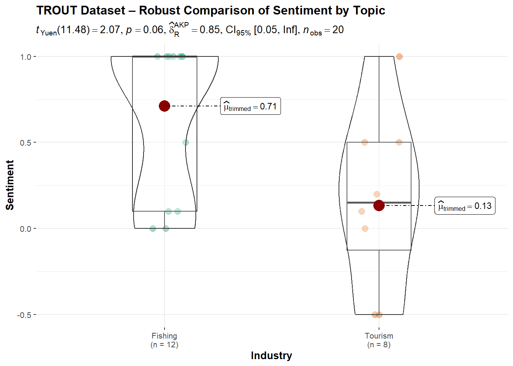
# Robust Yuen's Test
if (nrow(df_trout) > 1) {
WRS2::yuen(Sentiment ~ Industry, data = df_trout)
} else {
print("Not enough data to run Yuen’s test on TROUT.")
}Call:
WRS2::yuen(formula = Sentiment ~ Industry, data = df_trout)
Test statistic: 2.0741 (df = 11.48), p-value = 0.06128
Trimmed mean difference: 0.57917
95 percent confidence interval:
-0.0323 1.1906
Explanatory measure of effect size: 0.55 # Plot
if (nrow(df_filah) > 1 && all(is.finite(df_filah$Sentiment))) {
ggbetweenstats(
data = df_filah,
x = Industry,
y = Sentiment,
type = "robust",
title = "FILAH Dataset – Robust Comparison of Sentiment by Topic"
)
} else {
print("Not enough valid sentiment data in FILAH dataset.")
}# Robust Yuen's Test
if (nrow(df_filah) > 1) {
WRS2::yuen(Sentiment ~ Industry, data = df_filah)
} else {
print("Not enough data to run Yuen’s test on FILAH.")
}Call:
WRS2::yuen(formula = Sentiment ~ Industry, data = df_filah)
Test statistic: 2.8657 (df = 7.17), p-value = 0.02352
Trimmed mean difference: -0.84286
95 percent confidence interval:
-1.535 -0.1507
Explanatory measure of effect size: 0.91 # Plot
if (nrow(df_journalist) > 1 && all(is.finite(df_journalist$Sentiment))) {
ggbetweenstats(
data = df_journalist,
x = Industry,
y = Sentiment,
type = "robust",
title = "JOURNALIST Dataset – Robust Comparison of Sentiment by Topic"
)
} else {
print("Not enough valid sentiment data in JOURNALIST dataset.")
}
# Robust Yuen's Test
if (nrow(df_journalist) > 1) {
WRS2::yuen(Sentiment ~ Industry, data = df_journalist)
} else {
print("Not enough data to run Yuen’s test on JOURNALIST.")
}Call:
WRS2::yuen(formula = Sentiment ~ Industry, data = df_journalist)
Test statistic: 0.8214 (df = 14.57), p-value = 0.42466
Trimmed mean difference: -0.14342
95 percent confidence interval:
-0.5166 0.2297
Explanatory measure of effect size: 0.19 TROUT Dataset: Fishing received a higher trimmed mean sentiment (0.71) than Tourism (0.13), with a p-value = 0.0613. While not statistically significant, the result is borderline with a moderate effect size (0.55), suggesting some practical difference but not enough evidence to confirm bias.
FILAH Dataset: Tourism sentiment was significantly higher (0.75) than Fishing (−0.09), with a p-value = 0.0235. This indicates a statistically significant bias in favor of Tourism, consistent with FILAH’s narrative, supported by a large effect size (0.91).
JOURNALIST Dataset: Although Tourism again showed a higher sentiment (0.77 vs. 0.63), the p-value = 0.4247 was not statistically significant, and the effect size (0.18) was small. This suggests a more neutral or balanced stance in the Journalist dataset.
This section evaluates whether sentiment scores for Tourism and Fishing topics differ significantly across datasets (TROUT, FILAH, JOURNALIST). It aims to determine if specific datasets portray systematically more positive or negative sentiment for a given industry.
This test uses ANOVA to assess whether the average sentiment differs across the three datasets.
# Combine all datasets and label their source
combined_data <- bind_rows(datasets_raw, .id = "Dataset")
# Create subsets for Tourism and Fishing
tourism_data <- combined_data %>%
filter(Industry == "Tourism", !is.na(Sentiment))
fishing_data <- combined_data %>%
filter(Industry == "Fishing", !is.na(Sentiment))ggbetweenstats(tourism_data, x = Dataset, y = Sentiment, type = "parametric")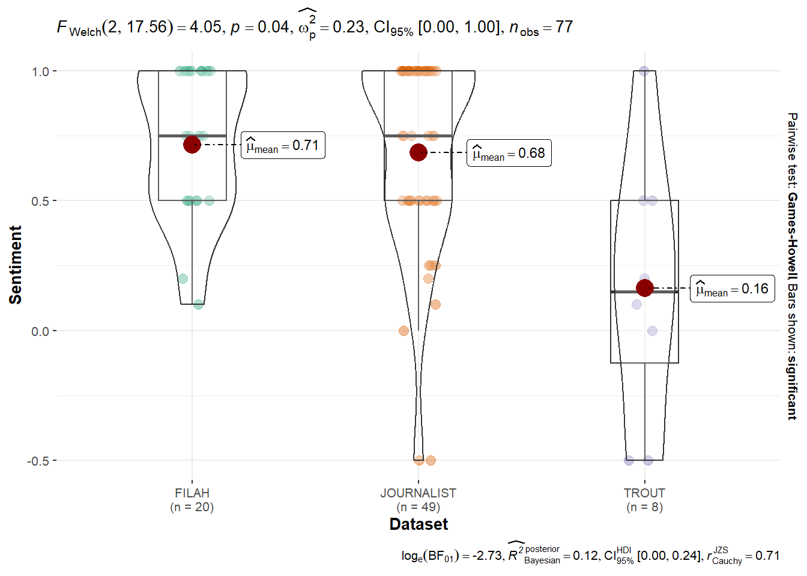
summary(aov(Sentiment ~ Dataset, data = tourism_data)) Df Sum Sq Mean Sq F value Pr(>F)
Dataset 2 2.034 1.0171 7.131 0.00147 **
Residuals 74 10.555 0.1426
---
Signif. codes: 0 '***' 0.001 '**' 0.01 '*' 0.05 '.' 0.1 ' ' 1ggbetweenstats(fishing_data, x = Dataset, y = Sentiment, type = "parametric")summary(aov(Sentiment ~ Dataset, data = fishing_data)) Df Sum Sq Mean Sq F value Pr(>F)
Dataset 2 3.016 1.5078 3.944 0.0276 *
Residuals 39 14.911 0.3823
---
Signif. codes: 0 '***' 0.001 '**' 0.01 '*' 0.05 '.' 0.1 ' ' 1Tourism Topics: Statistically significant differences were found (p < 0.05), at 0.00147 with FILAH expressing the strongest positive sentiment. This suggests dataset-specific framing in favor of Tourism.
Fishing Topics: Sentiment also differ significantly with p-value at 0.0276 across datasets, though not as strong as the Tourism topic.
This section repeats the comparison using the Kruskal-Wallis test, which is suitable for non-normal or ordinal data.
ggbetweenstats(tourism_data, x = Dataset, y = Sentiment, type = "nonparametric")kruskal.test(Sentiment ~ Dataset, data = tourism_data)
Kruskal-Wallis rank sum test
data: Sentiment by Dataset
Kruskal-Wallis chi-squared = 8.8692, df = 2, p-value = 0.01186ggbetweenstats(fishing_data, x = Dataset, y = Sentiment, type = "nonparametric")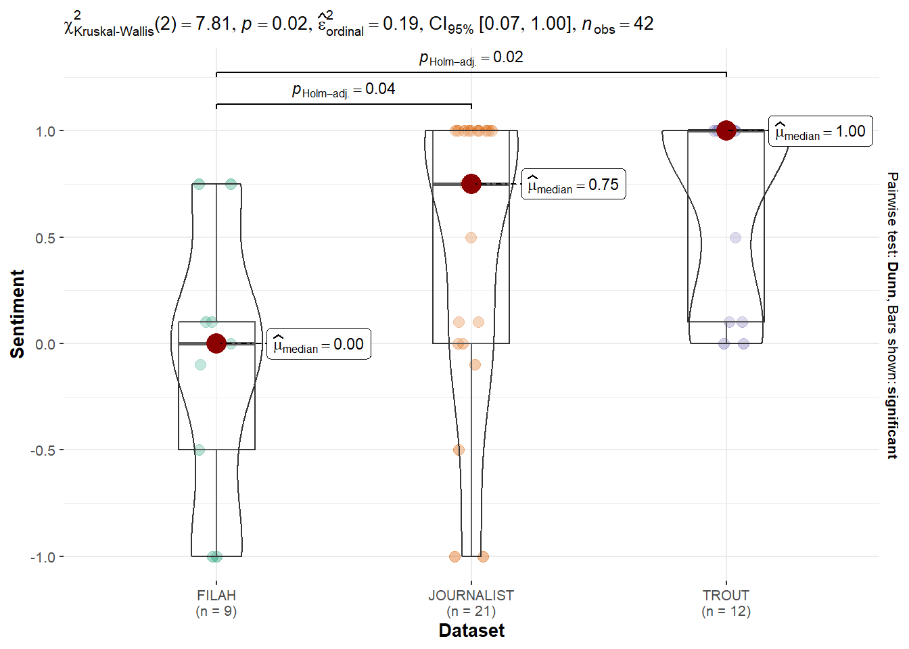
kruskal.test(Sentiment ~ Dataset, data = fishing_data)
Kruskal-Wallis rank sum test
data: Sentiment by Dataset
Kruskal-Wallis chi-squared = 7.8088, df = 2, p-value = 0.02015Tourism Topics: A p-value of 0.01186 confirms the parametric result, showing significant variation in sentiment toward Tourism across datasets, with FILAH notably distinct.
Fishing Topics: A p-value of 0.02015 suggests that sentiment framing toward Fishing also differs significantly across the datasets, need to perform additional test to confirm.
This section uses Yuen’s test to perform a robust comparison of sentiment scores across datasets, for both Tourism and Fishing topics. The visualizations use trimmed means and effect size indicators to mitigate the influence of outliers and non-normal distributions.
ggbetweenstats(
data = tourism_data,
x = Dataset,
y = Sentiment,
type = "robust",
title = "Tourism Topics – Robust Comparison of Sentiment across Datasets"
)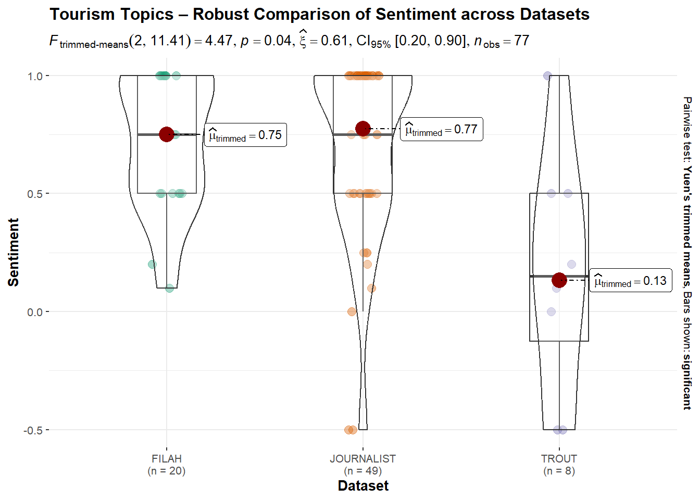
# Run robust test manually across datasets for Tourism
WRS2::t1way(Sentiment ~ Dataset, data = tourism_data)Call:
WRS2::t1way(formula = Sentiment ~ Dataset, data = tourism_data)
Test statistic: F = 4.4708
Degrees of freedom 1: 2
Degrees of freedom 2: 11.41
p-value: 0.03684
Explanatory measure of effect size: 0.66
Bootstrap CI: [0.33; 0.88]ggbetweenstats(
data = fishing_data,
x = Dataset,
y = Sentiment,
type = "robust",
title = "Fishing Topics – Robust Comparison of Sentiment across Datasets"
)# Run robust test manually across datasets for Fishing
WRS2::t1way(Sentiment ~ Dataset, data = fishing_data)Call:
WRS2::t1way(formula = Sentiment ~ Dataset, data = fishing_data)
Test statistic: F = 2.9397
Degrees of freedom 1: 2
Degrees of freedom 2: 13.48
p-value: 0.08718
Explanatory measure of effect size: 0.56
Bootstrap CI: [0.27; 0.85]Tourism Topics: The robust test found a statistically significant difference in sentiment across datasets (p = 0.0368), with FILAH and JOURNALIST both showing high trimmed means (0.75 and 0.77), while TROUT was much lower (0.13). This confirms earlier findings that TROUT consistently portrays Tourism less positively, supporting claims of framing differences. Effect size was moderate to large at 0.64.
Fishing Topics: Although the robust test showed a non-significant p-value (p = 0.0872), the effect size was moderate at 0.56, indicating some practical difference. TROUT showed the highest sentiment for Fishing (0.71), while FILAH had a negative trimmed mean (−0.09), suggesting contrasting framing, though not conclusively supported statistically.
This section explores whether individual COOTEFOO board members demonstrate statistically significant differences in sentiment between Tourism and Fishing topics. We use both parametric (ANOVA) and non-parametric (Kruskal-Wallis) tests to evaluate sentiment bias for all six members.
# Prepare subsets for each member
df_seal <- combined_data %>% filter(Member == "Seal", !is.na(Sentiment), !is.na(Industry))
df_teddy <- combined_data %>% filter(Member == "Teddy Goldstein", !is.na(Sentiment), !is.na(Industry))
df_simone <- combined_data %>% filter(Member == "Simone Kat", !is.na(Sentiment), !is.na(Industry))
df_carol <- combined_data %>% filter(Member == "Carol Limpet", !is.na(Sentiment), !is.na(Industry))
df_ed <- combined_data %>% filter(Member == "Ed Helpsford", !is.na(Sentiment), !is.na(Industry))
df_tante <- combined_data %>% filter(Member == "Tante Titan", !is.na(Sentiment), !is.na(Industry))The following tests assume normality and compare mean sentiment toward the two industries for each board member.
ggbetweenstats(df_seal, x = Industry, y = Sentiment, type = "parametric")summary(aov(Sentiment ~ Industry, data = df_seal)) Df Sum Sq Mean Sq F value Pr(>F)
Industry 1 0.025 0.025000 9.286 0.00935 **
Residuals 13 0.035 0.002692
---
Signif. codes: 0 '***' 0.001 '**' 0.01 '*' 0.05 '.' 0.1 ' ' 1ggbetweenstats(df_teddy, x = Industry, y = Sentiment, type = "parametric")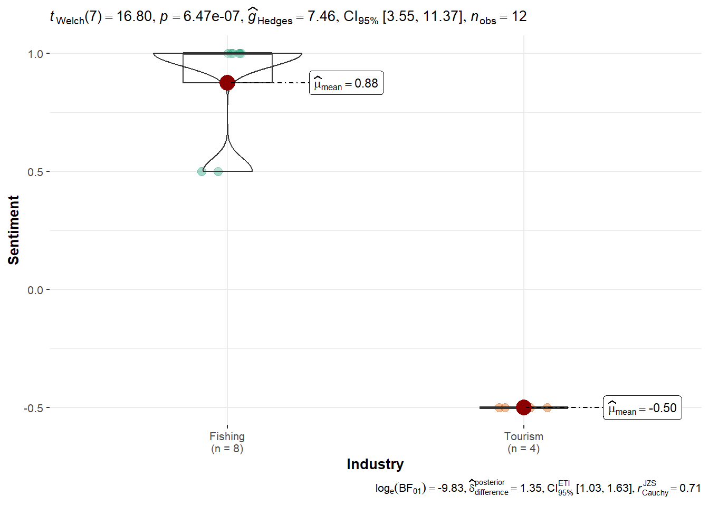
summary(aov(Sentiment ~ Industry, data = df_teddy)) Df Sum Sq Mean Sq F value Pr(>F)
Industry 1 5.042 5.042 134.4 4.03e-07 ***
Residuals 10 0.375 0.038
---
Signif. codes: 0 '***' 0.001 '**' 0.01 '*' 0.05 '.' 0.1 ' ' 1ggbetweenstats(df_simone, x = Industry, y = Sentiment, type = "parametric")
summary(aov(Sentiment ~ Industry, data = df_simone)) Df Sum Sq Mean Sq F value Pr(>F)
Industry 1 8.885 8.885 40.86 3.5e-07 ***
Residuals 32 6.958 0.217
---
Signif. codes: 0 '***' 0.001 '**' 0.01 '*' 0.05 '.' 0.1 ' ' 1ggbetweenstats(df_carol, x = Industry, y = Sentiment, type = "parametric")if (nrow(df_carol) > 1 && n_distinct(df_carol$Industry) >= 2) {
summary(aov(Sentiment ~ Industry, data = df_carol))
} else {
print("Not enough topic variety to run ANOVA for Carol Limpet.")
}[1] "Not enough topic variety to run ANOVA for Carol Limpet."ggbetweenstats(df_ed, x = Industry, y = Sentiment, type = "parametric")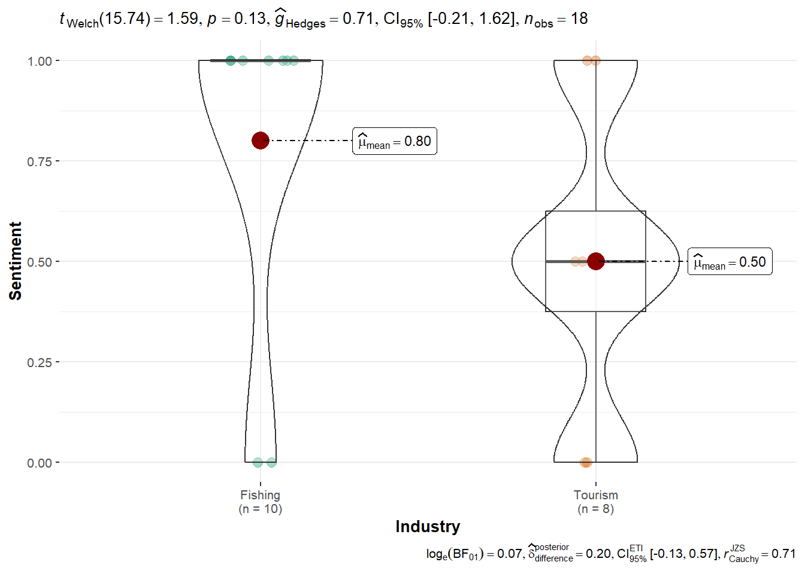
summary(aov(Sentiment ~ Industry, data = df_ed)) Df Sum Sq Mean Sq F value Pr(>F)
Industry 1 0.4 0.4000 2.462 0.136
Residuals 16 2.6 0.1625 ggbetweenstats(df_tante, x = Industry, y = Sentiment, type = "parametric")summary(aov(Sentiment ~ Industry, data = df_tante)) Df Sum Sq Mean Sq F value Pr(>F)
Industry 1 0.1132 0.11319 1.483 0.235
Residuals 24 1.8315 0.07631 Seal and Simone Kat show statistically significant preference for Tourism.
Teddy Goldstein shows preference toward Fishing.
Carol Limpet and Ed Helpsford show no significant differences.
Tante Titan shows a subtle but not significant preference for Tourism.
This version of the test relaxes normality assumptions and compares rank-based sentiment distributions.
ggbetweenstats(df_seal, x = Industry, y = Sentiment, type = "nonparametric")kruskal.test(Sentiment ~ Industry, data = df_seal)
Kruskal-Wallis rank sum test
data: Sentiment by Industry
Kruskal-Wallis chi-squared = 5.8333, df = 1, p-value = 0.01573ggbetweenstats(df_teddy, x = Industry, y = Sentiment, type = "nonparametric")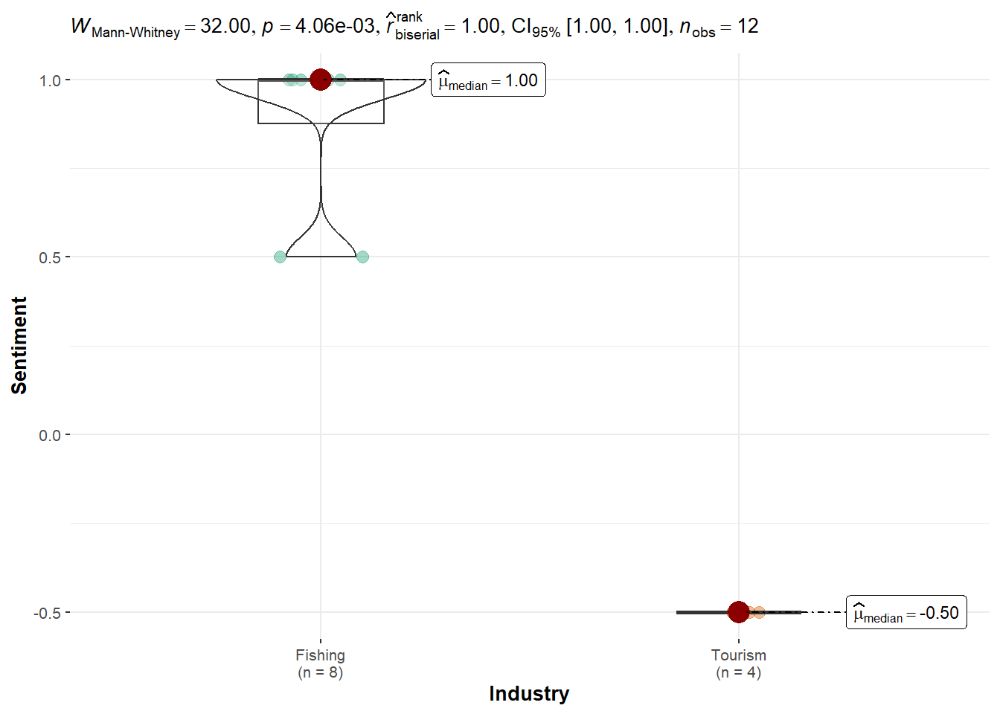
kruskal.test(Sentiment ~ Industry, data = df_teddy)
Kruskal-Wallis rank sum test
data: Sentiment by Industry
Kruskal-Wallis chi-squared = 8.8, df = 1, p-value = 0.003012ggbetweenstats(df_simone, x = Industry, y = Sentiment, type = "nonparametric")kruskal.test(Sentiment ~ Industry, data = df_simone)
Kruskal-Wallis rank sum test
data: Sentiment by Industry
Kruskal-Wallis chi-squared = 18.035, df = 1, p-value = 2.169e-05ggbetweenstats(df_carol, x = Industry, y = Sentiment, type = "nonparametric")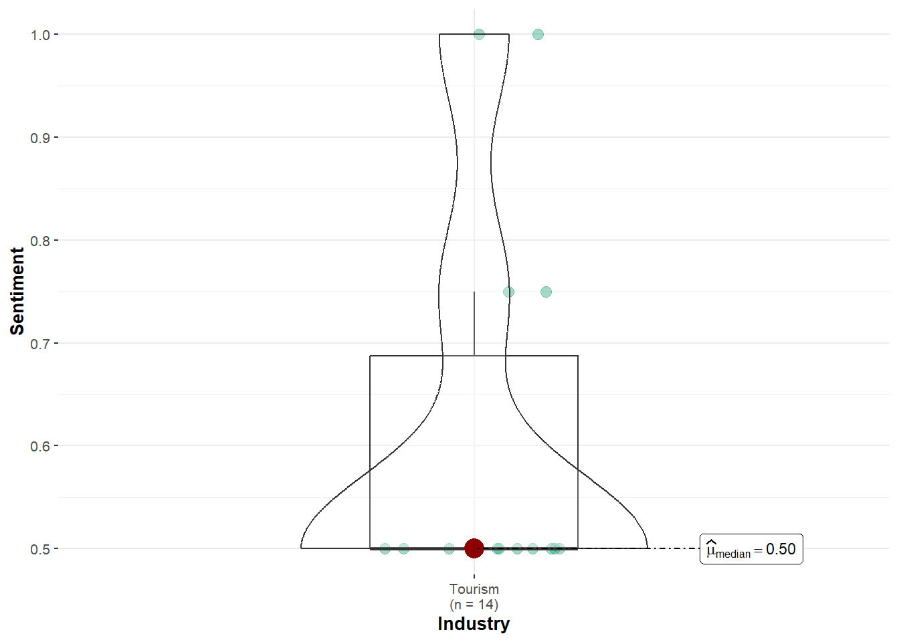
if (nrow(df_carol) > 1 && n_distinct(df_carol$Industry) >= 2) {
kruskal.test(Sentiment ~ Industry, data = df_carol)
} else {
print("Not enough topic variety to run Kruskal-Wallis for Carol Limpet.")
}[1] "Not enough topic variety to run Kruskal-Wallis for Carol Limpet."ggbetweenstats(df_ed, x = Industry, y = Sentiment, type = "nonparametric")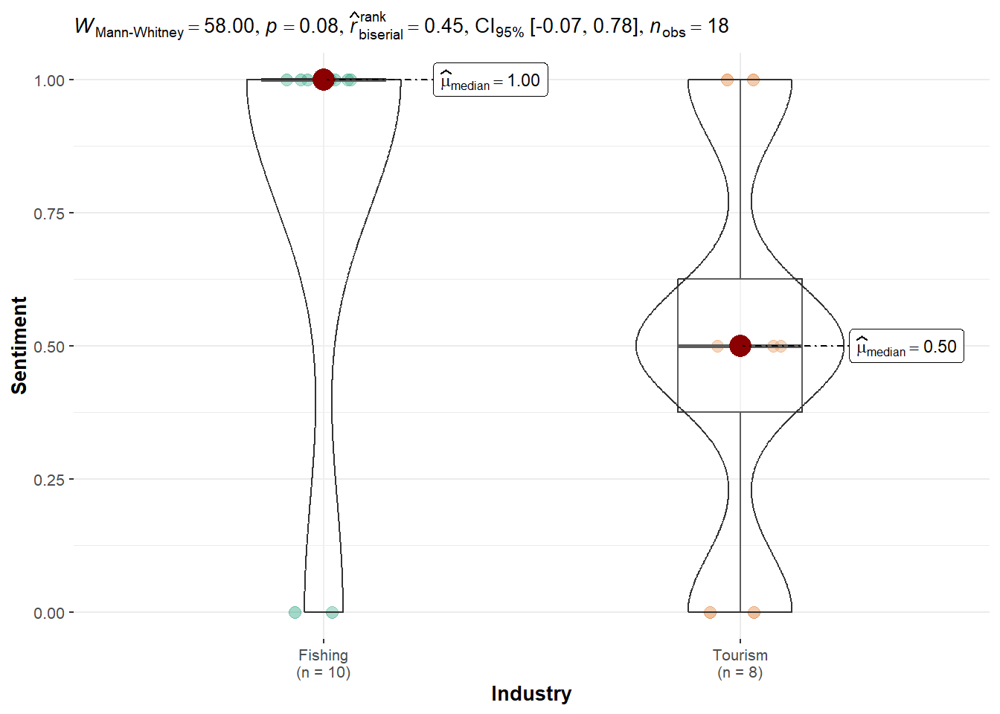
ggbetweenstats(df_tante, x = Industry, y = Sentiment, type = "nonparametric")kruskal.test(Sentiment ~ Industry, data = df_tante)
Kruskal-Wallis rank sum test
data: Sentiment by Industry
Kruskal-Wallis chi-squared = 1.6398, df = 1, p-value = 0.2004Seal: Displays a statistically significant preference for Tourism (p = 0.016), supporting the idea of a directional bias.
Teddy Goldstein: Shows strong preference toward Fishing, with a significant difference (p = 0.004), contrasting with the broader pro-Tourism trend. However, this should be investigated further.
Simone Kat: Exhibits a highly significant bias in favor of Tourism (p < 0.001), with a wide gap in median sentiment between topics.
Carol Limpet: Sentiment scores were only present in FILAH and JOURNALIST, and limited to Tourism topics only, hence no comparison could be made. This prevents any conclusive test on bias.
Ed Helpsford: Shows no statistically significant difference (p = 0.08), though a slight numerical preference for Fishing is observed.
Tante Titan: Sentiment levels were equal across both industries, and the test was not significant (p = 0.20), indicating a neutral sentiment distribution.
This section uses a robust comparison of sentiment between Tourism and Fishing topics for each COOTEFOO board member. Yuen’s test, which is less sensitive to outliers and non-normal distributions, complements the previous parametric and non-parametric results.
ggbetweenstats(df_seal, x = Industry, y = Sentiment, type = "robust")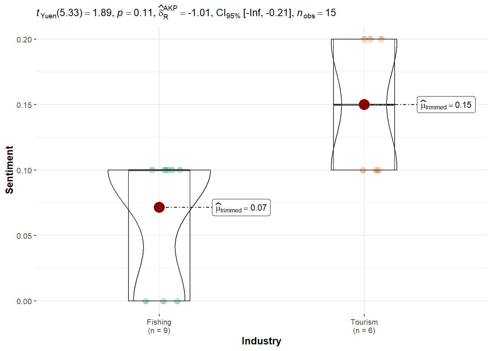
if (nrow(df_seal) > 1 && n_distinct(df_seal$Industry) >= 2) {
WRS2::yuen(Sentiment ~ Industry, data = df_seal)
} else {
print("Not enough data to run Yuen’s test for Seal.")
}Call:
WRS2::yuen(formula = Sentiment ~ Industry, data = df_seal)
Test statistic: 1.8911 (df = 5.33), p-value = 0.11355
Trimmed mean difference: -0.07857
95 percent confidence interval:
-0.1834 0.0262
Explanatory measure of effect size: 0.75 ggbetweenstats(df_teddy, x = Industry, y = Sentiment, type = "robust")if (nrow(df_teddy) > 1 && n_distinct(df_teddy$Industry) >= 2) {
WRS2::yuen(Sentiment ~ Industry, data = df_teddy)
} else {
print("Not enough data to run Yuen’s test for Teddy Goldstein.")
}Call:
WRS2::yuen(formula = Sentiment ~ Industry, data = df_teddy)
Test statistic: 12.6711 (df = 5), p-value = 5e-05
Trimmed mean difference: 1.41667
95 percent confidence interval:
1.1293 1.7041
Explanatory measure of effect size: 0.83 ggbetweenstats(df_simone, x = Industry, y = Sentiment, type = "robust")if (nrow(df_simone) > 1 && n_distinct(df_simone$Industry) >= 2) {
WRS2::yuen(Sentiment ~ Industry, data = df_simone)
} else {
print("Not enough data to run Yuen’s test for Simone Kat")
}Call:
WRS2::yuen(formula = Sentiment ~ Industry, data = df_simone)
Test statistic: 3.3584 (df = 7.22), p-value = 0.01158
Trimmed mean difference: -1.14107
95 percent confidence interval:
-1.9396 -0.3425
Explanatory measure of effect size: 0.83 ggbetweenstats(df_carol, x = Industry, y = Sentiment, type = "robust")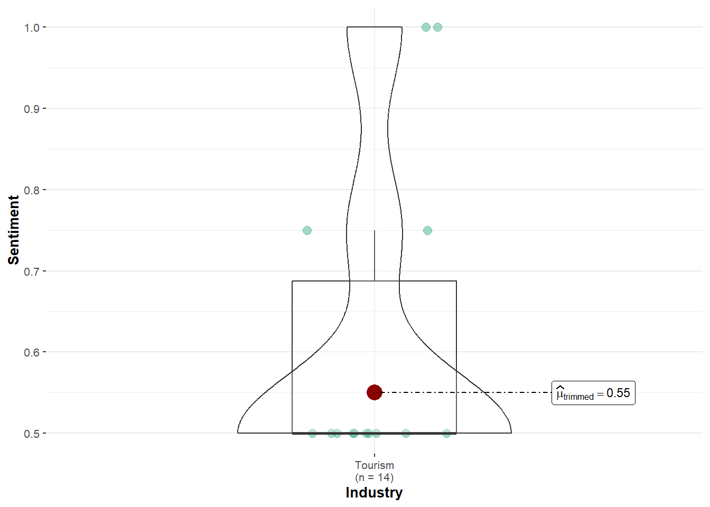
if (nrow(df_carol) > 1 && n_distinct(df_carol$Industry) >= 2) {
WRS2::yuen(Sentiment ~ Industry, data = df_carol)
} else {
print("Not enough data to run Yuen’s test for Carol Limpet.")
}[1] "Not enough data to run Yuen’s test for Carol Limpet."ggbetweenstats(df_ed, x = Industry, y = Sentiment, type = "robust")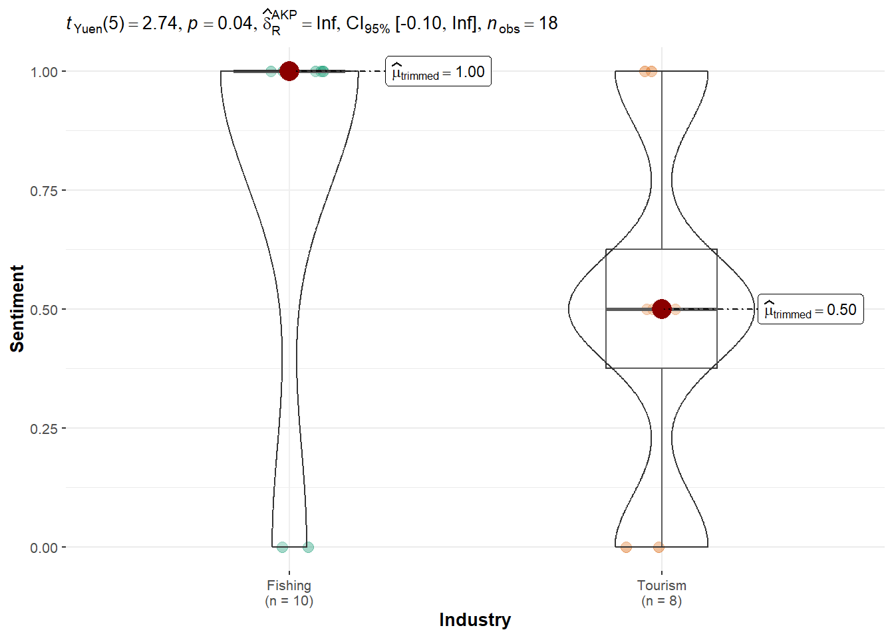
if (nrow(df_ed) > 1 && n_distinct(df_ed$Industry) >= 2) {
WRS2::yuen(Sentiment ~ Industry, data = df_ed)
} else {
print("Not enough data to run Yuen’s test for Ed Helpsford.")
}Call:
WRS2::yuen(formula = Sentiment ~ Industry, data = df_ed)
Test statistic: 2.7386 (df = 5), p-value = 0.04086
Trimmed mean difference: 0.5
95 percent confidence interval:
0.0307 0.9693
Explanatory measure of effect size: 0.35 # Safely check and run Yuen’s test for Tante Titan
if (exists("df_tante")) {
valid_df <- df_tante %>%
filter(Industry %in% c("Tourism", "Fishing")) %>%
filter(!is.na(Sentiment), is.finite(Sentiment))
group_counts <- table(valid_df$Industry)
# Additional check: each group must have > 1 unique value (non-zero std dev)
sd_check <- valid_df %>%
group_by(Industry) %>%
summarise(sd = sd(Sentiment), .groups = "drop") %>%
filter(!is.na(sd) & sd > 0)
if (all(c("Tourism", "Fishing") %in% names(group_counts)) &&
all(group_counts >= 2) &&
nrow(sd_check) == 2) {
WRS2::yuen(Sentiment ~ Industry, data = valid_df)
} else {
print("Not enough valid and variable data to run Yuen’s test for Tante Titan.")
}
} else {
print("df_tante does not exist.")
}[1] "Not enough valid and variable data to run Yuen’s test for Tante Titan."Seal: Mean sentiment was higher for Tourism (0.15) compared to Fishing (0.07), but the result was not statistically significant (p = 0.1136). This suggests only a mild directional tendency and no strong evidence of bias.
Teddy Goldstein: Strong evidence of pro-Fishing bias with a very high trimmed mean for Fishing (0.92) and negative sentiment for Tourism (−0.50). The test was highly significant (p = 5.44e−05), and the effect size was very large. This result confirms Teddy’s strong preference for Fishing topics, but this will be investigated further in other parts of the Shiny app and Results Analysis.
Simone Kat: Tourism received a much higher trimmed mean (0.93) than Fishing (−0.21), with a significant result (p = 0.0116). This supports a clear bias in favor of Tourism, with a large effect size of 0.82.
Carol Limpet: Sentiment values were only available for Tourism topics (n = 14), and no comparison could be made. As a result, the robust test could not be run, and no statistical conclusion can be drawn.
Ed Helpsford: The robust test showed significantly higher sentiment toward Fishing (1.00) than Tourism (0.50), with p = 0.0409. This suggests a statistically meaningful preference for Fishing topics, although the confidence interval included 0, indicating a moderate effect.
Tante Titan: Data was either insufficient or lacked variation in both groups. As This person sentiment only present in the Journalist dataset.
Across all three CDA dimensions (by topic, by dataset, by member), the findings provide statistical validation of a directional bias toward Tourism, especially in the FILAH dataset and for certain members like Simone Kat. In contrast, claims of Fishing-favoring bias (e.g., by TROUT) appear less supported or inconclusive. These findings align with the hypothesis that sentiment framing differs across datasets and among COOTEFOO members.
👉 For full details and all four statistical tests including Bayesian analysis, refer to the interactive Shiny Dashboard.